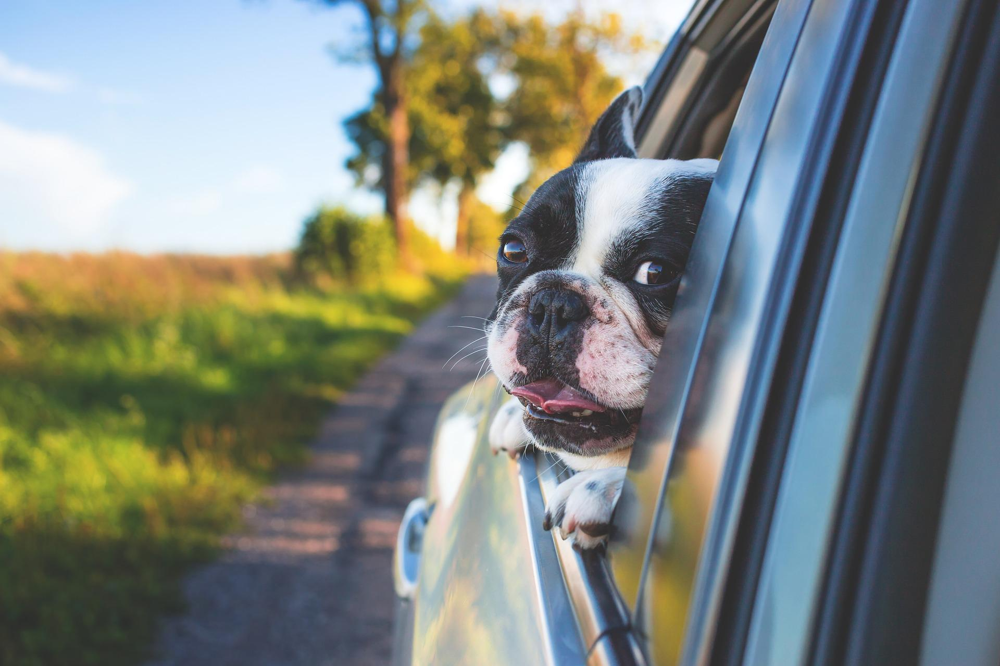

Types of dog breeds
Dogs can teach kids responsibility,
comparision and patience-not to mention being the best playmate anyone could ask for.Before you adopt anu pup,however,it's always smart to research the most suitable dog breed for your home and lifestyle.
some dogs love to tussle with rambunctious older kids,while others have gentle,patient souls are more suited for little one who might get spooked by more energetic animals.If you have younh children at home,consider adopting an older dogs instead of puppy.Older dos are generally more patient and laid-back than younger ones,which is key for kids who might pull tails or ears.
The dog breeds on our list include some pure breeds, some mixed breeds and some perfectly lovable and adorable dogs hardly deserving of their less-than-flawless reputations! Don't forget the next great love of your life might be waiting for you right now at your local animal shelter.
Are you looking to add a new member to the family — or just can’t get enough dog pics? Check out our roundups of the best family dogs, best small dog breeds and best large dog breeds for more inspiration.
